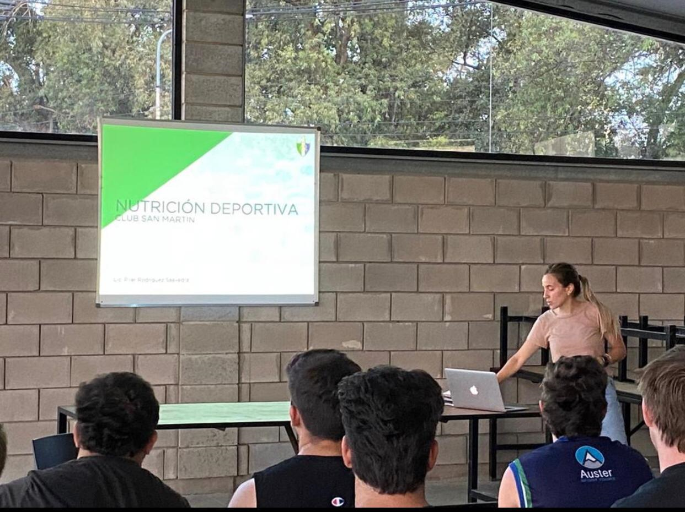
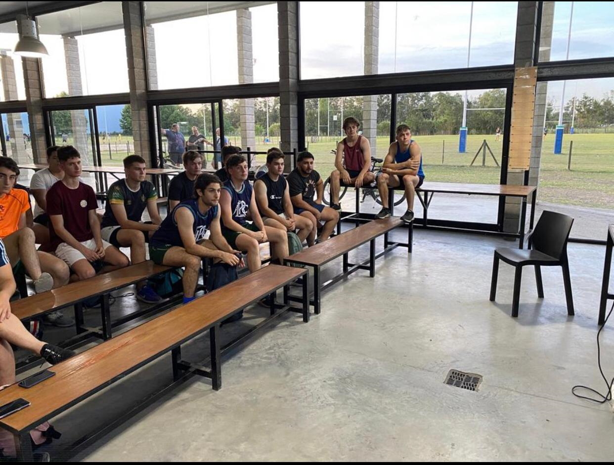
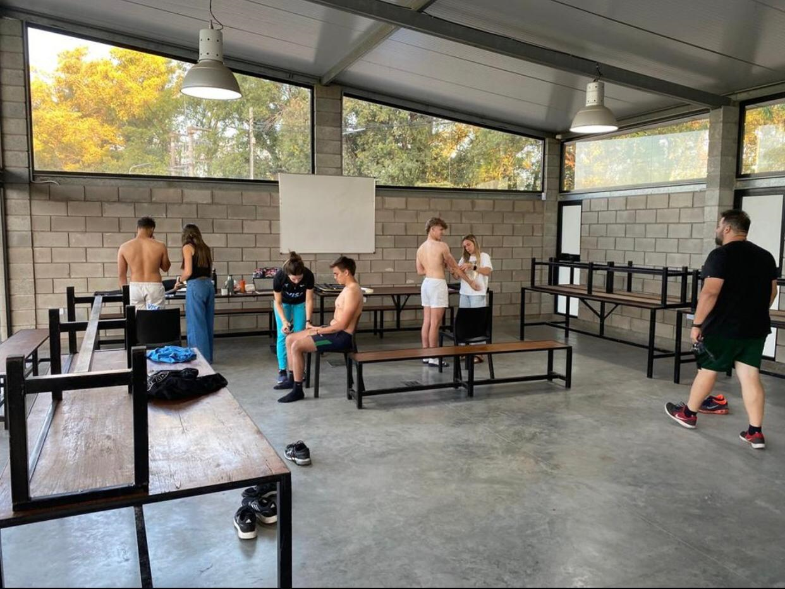

M-19
Tabla de Posiciones
- 
-

- 
- 
Objetivos Estratégicos: Lograr que los jugadores vivan la experiencia de un Plan de Juego de Ataque basado en las experiencias vividas anteriormente en M16 y 17 con respecto a dividir el campo en tres sectores sobre el eje longitudinal (zona de defensa, zona de gestación, y zona de extremos ataque). Elaborando jugadas desde distintos sectores con movimientos preestablecidos de los 15 jugadores hasta la 2da fase. Desarrollar la organización de la defensa desde formaciones fijas y móviles a partir de la enseñanza de las tres líneas de defensa poniendo como gran objetivo la recuperación de la pelota para contraatacar. Desarrollar una estrategia de defensa en el line out (ej. Evolution) y en su maul posterior. Estructurar los movimientos posteriores según zonas de caída de pelota y los canales de carrera en las salidas en contra y a favor
Objetivos Tácticos: Lograr que los jugadores puedan decidir correctamente en el MGJ: Si el movimiento avanza, lo alimentamos hasta el ingoal, si disminuye la velocidad, lo transformamos antes que se detenga, con la mano o pie (pelota adentro y presión ordenada). Si transformamos, lanzamos hacia los espacios debilitados o libres Cuando transformamos lo hacemos rápido antes que la defensa ocupe los espacios débiles. Detectar a los especialistas en decidir correctamente para orientarlos al rol de lanzadores de juego. Detectar a los especialistas en decidir correctamente en el juego de contacto adentro de la defensa. Confirmar la incorporación del hábito de ocupar el ancho del campo para generar espacios en los intervalos entre defensores donde poder penetrar o bien atacar desplegado si la defensa se mantuvo agrupada
Técnicas generales: Detectar y perfeccionar a los especialistas en todas las destrezas individuales que involucra el juego del rugby. Consolidar el hábito de correr con la pelota en dos manos cuando enfrento a defensores, una vez en carrera o en situación de hand off pasarla. Continuar desarrollando el hábito de jugar de pie. Desarrollar la técnica de zeppelín básica para ambos lados a la carrera y con oposición real y en espacios amplios. Consolidar el pase desplegado a la carrera y viniendo desde atrás (no pasarse), que llegue delante del receptor entre su pecho y su cadera y no ocasione detención, no comenzar a correr antes que mi pasador. Perfeccionar la técnica de pase “colgado” para el ataque penetrante. El receptor debe venir desde atrás observando y sin pasarse al canal lateral hasta no percibir la decisión tomada por el portador.